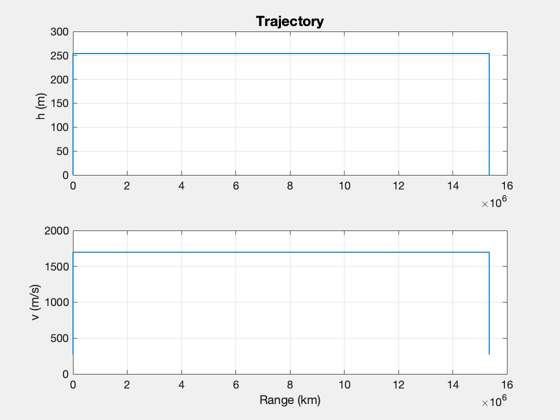

Hypersonic airliner design.
It first computes the thrust for the cruise condition and then checks takeoff and landing. A trip between Newark and Singapore is analyzed. The design is compared to the XB-70 and the Airbus 340-500 in a table. ------------------------------------------------------------------------
See also AircraftEquilibrium, StallVelocity, LandingDistance, TakeoffDistance, AircraftGroupDataStructure, AircraftDesign, AircraftGroupMassStatement ------------------------------------------------------------------------
%-------------------------------------------------------------------------- % Copyright (c) 2013 Princeton Satellite Systems, Inc. % All rights reserved. %-------------------------------------------------------------------------- s = cell(15,2); g = 9.806; mass = 221494.0; gamma = 0; h = 25400; % Altitude m = 5; % Mach number thrustScimitar = 372254; nEngines = 2; % We are using a double delta d.length = 18*12*.0254; d.oswaldEff = 0.95; d.aspectRatio = 1.751; % XB-70 d.thickness = 0.04; d.fract = 1; d.zetaTrans = 0.1; d.sweep = 65; % XB-70 [thrust, wingArea] = AircraftEquilibrium( mass, gamma, h, m, d ); lNewark = 11000*12*0.0254; wLoading = mass*g/wingArea; % Wing loading, A380 kg/m^2 cL = 1; fT = 1.2; fL = 1.3; vStall = StallVelocity( mass, cL, wingArea ); cD0 = 0.02 + DragUndercarriage( mass, wingArea ); muL = 0.4; % Brakes muT = 0.02; % Rolling resistance no brakes hB = 0.1; d.s = wingArea; d.oswaldEff = 0.83; d.aspectRatio = 6; vT = fT*vStall; vL = fL*vStall; t = nEngines*thrustScimitar; sL = LandingDistance( mass, vL, t, cL, cD0, muL, hB, d ); sT = TakeoffDistance( mass, vT, t, cL, cD0, muT, hB, d ); k = 1; s{k,1} = 'Mass'; s{k,2} = sprintf('%12.2f kg', mass); k = k + 1; s{k,1} = 'Newark Airport Runway'; s{k,2} = sprintf('%12.2f m', lNewark); k = k + 1; s{k,1} = 'Takeoff distance'; s{k,2} = sprintf('%12.2f m', sT); k = k + 1; s{k,1} = 'Landing distance'; s{k,2} = sprintf('%12.2f m', sL); k = k + 1; s{k,1} = 'Wing loading'; s{k,2} = sprintf('%12.2f N/m$^2$', wLoading); k = k + 1; s{k,1} = 'Stall velocity'; s{k,2} = sprintf('%12.2f m/s', vStall); k = k + 1; s{k,1} = 'Takeoff velocity'; s{k,2} = sprintf('%12.2f m/s', vT ); k = k + 1; s{k,1} = 'Landing velocity'; s{k,2} = sprintf('%12.2f m/s', vL); k = k + 1; s{k,1} = 'Thrust cruise'; s{k,2} = sprintf('%12.2f N', thrust); k = k + 1; s{k,1} = 'Thrust Scimitar'; s{k,2} = sprintf('%12.2f N', thrustScimitar); k = k + 1; s{k,1} = 'Number of engines'; s{k,2} = sprintf('%12d ', nEngines); k = k + 1; s{k,1} = 'Wing area'; s{k,2} = sprintf('%12.2f m$^2$', wingArea); k = k + 1; s{k,1} = 'Rolling resistance'; s{k,2} = sprintf('%12.2f', muT); k = k + 1; s{k,1} = 'Rolling resistance brakes'; s{k,2} = sprintf('%12.2f', muL); k = k + 1; s{k,1} = 'Cruise Mach number'; s{k,2} = sprintf('%12.2f', m); for k = 1:size(s,1) fprintf(1,'%26s %20s\n',s{k,1},s{k,2}); end CreateLatexTable(s,'HypersonicAirlinerDesign') % Analyze a trip from Newark to Singapore clear d d.range = 15345; % km d.altitude = 254; % km d.machClimb = 0.8; d.machCruise = m; d.runway = 3; d.fPAClimb = 10; % deg d.fEngine = 'Scimitar'; d.nEngine = 2; d.tTaxi = 10; % Minutes nPassengers.economy = 210; nPassengers.business = 72; nPassengers.first = 32; d.fuselage.length = 70; d.fuselage.diameter = (4*20 + 10*18)*0.025400; d.mass = mass; % Guess d.rhoFuel = 85; % 67.8; % kg/m^2 slush 85 d.s = wingArea; % m^2 d.cLAlpha = 2*pi; d.lOverD = 7; tol = 10; n = 10; thrustToWeight = 8283/514000; passengers = nPassengers.economy + nPassengers.business + nPassengers.first; % Assign specific values p = AircraftGroupDataStructure( 'crew', 2,... 'attendants', 8,... 'nEngine', 2,... 'passengers', passengers,... 'fuelTankRatio', 287/1250,... 'mEngineDry', thrustScimitar*thrustToWeight,... 'l', d.fuselage.length,... 'dAve', d.fuselage.diameter); d = AircraftDesign( d, n, tol, p ); j = strncmp('fuel',d.groupMass.group,5); mFuel = d.groupMass.mass(j); AircraftGroupMassStatement( mFuel, d.p, 'HypersonicGroupMassStatement' ) clear w k = 1; w{k,1} = 'Parameter'; w{k,2} = 'Hypersonic'; w{k,3} = 'XB-70'; w{k,4} = 'Airbus 340-500'; k = k + 1; w{k,1} = 'Maximum Altitude'; w{k,2} = '24.5 km'; w{k,3} = '23.6 km'; w{k,4} = '12.5 km'; k = k + 1; w{k,1} = 'Range'; w{k,2} = '17500 km'; w{k,3} = '6900 km'; w{k,4} = '16670 km'; k = k + 1; w{k,1} = 'Overall Length'; w{k,2} = '0'; w{k,3} = '57.6 m'; w{k,4} = '67.93 m'; k = k + 1; w{k,1} = 'Maximum Takeoff Mass'; w{k,2} = '220 MT'; w{k,3} = '246 MT'; w{k,4} = '372 MT'; k = k + 1; w{k,1} = 'Dry Mass'; w{k,2} = '170 MT'; w{k,3} = '115 MT'; w{k,4} = '230 MT'; k = k + 1; w{k,1} = 'Wing Span'; w{k,2} = '0'; w{k,3} = '32 m'; w{k,4} = '63.45 m'; k = k + 1; w{k,1} = 'Thrust '; w{k,2} = '2$\times$372 kN'; w{k,3} = '6$\times$84 kN/128 kN'; w{k,4} = '249 kN'; k = k + 1; w{k,1} = 'Mach'; w{k,2} = '5.0'; w{k,3} = '3.1'; w{k,4} = '0.86'; k = k + 1; w{k,1} = 'Seating (3-class)'; w{k,2} = '314'; w{k,3} = '0'; w{k,4} = '313'; CreateLatexTable(w,'HypersonicComparisonTable') for k = 1:size(w,1) fprintf(1,'%22s %16s %20s %20s\n',w{k,1},w{k,2},w{k,3},w{k,4}); end % PSS internal file version information %-------------------------------------- % $Id: 3d7be6ef06eeb9ccbb482e113019038dbfba9312 $
Mass 221494.00 kg
Newark Airport Runway 3352.80 m
Takeoff distance 1872.50 m
Landing distance 1269.01 m
Wing loading 4338.30 N/m$^2$
Stall velocity 84.16 m/s
Takeoff velocity 100.99 m/s
Landing velocity 109.41 m/s
Thrust cruise 246525.17 N
Thrust Scimitar 372254.00 N
Number of engines 2
Wing area 500.65 m$^2$
Rolling resistance 0.02
Rolling resistance brakes 0.40
Cruise Mach number 5.00
Trip time = 2.51 hours
Group Mass (kg) Mass (%)
1. fuselage 58792.6 26.54
2. wing 4342.1 1.96
3. empennage horizontal 608.8 0.27
4. empennage vertical 271.0 0.12
5. nacelle 213.7 0.10
6. undercarriage 8859.7 4.00
7. power plant 16796.6 7.58
8. systems 24364.1 11.00
9. furnishings 14397.0 6.50
10. contingency 3322.4 1.50
11. crew 180.0 0.08
12. payload 28260.0 12.76
13. fuel 49677.9 22.43
14. fuel tank 11406.0 5.15
---------------- ------------ ------------
Total 221492.1 100.00
Parameter Hypersonic XB-70 Airbus 340-500
Maximum Altitude 24.5 km 23.6 km 12.5 km
Range 17500 km 6900 km 16670 km
Overall Length 0 57.6 m 67.93 m
Maximum Takeoff Mass 220 MT 246 MT 372 MT
Dry Mass 170 MT 115 MT 230 MT
Wing Span 0 32 m 63.45 m
Thrust 2$\times$372 kN 6$\times$84 kN/128 kN 249 kN
Mach 5.0 3.1 0.86
Seating (3-class) 314 0 313
